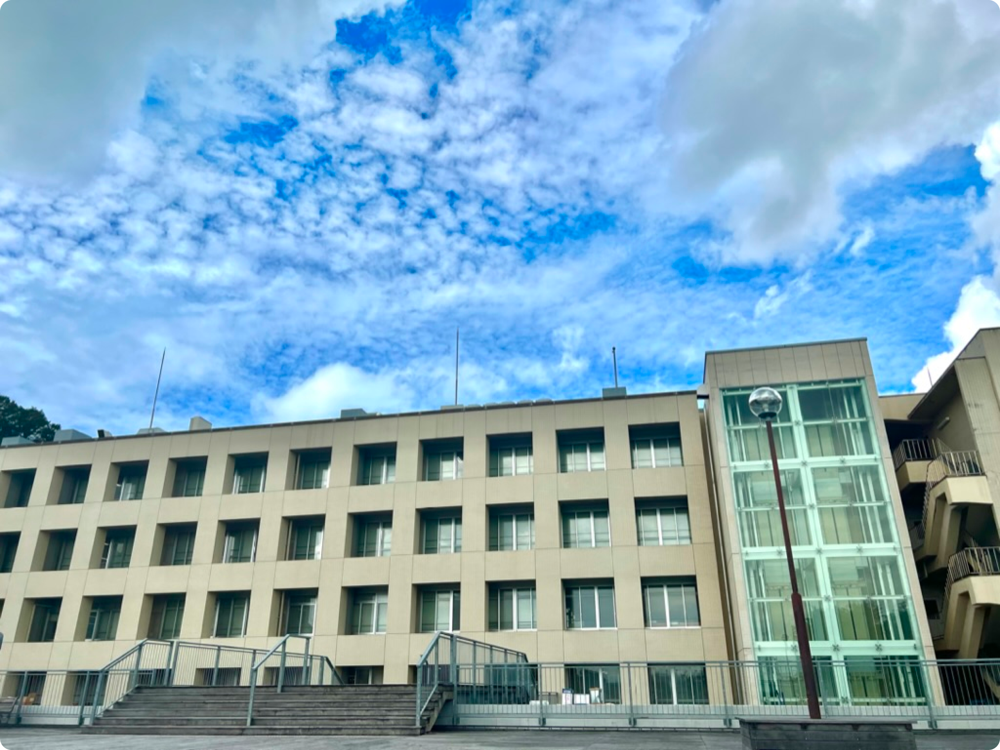

知識と美しさが混在した神戸大学六甲台キャンパス。キャンパス内に広がる青々とした緑地と美しい庭園は、学生と教員が革新的なアイデアを生み出すインスピレーションの源であり最新の設備の学問に取り組む環境が整備されています。
学部ごとに大きな棟を１つ構えている。そんな中でも 知能の集積である神戸大学を代表するような学部棟を 紹介します。
階段を登ると真っ先に目に入るのが神戸大学の写 真でよく使われている経済、経営、法学部棟で多く のパンフレットなどで用いられています。 建物の中も古風のイタリアのような雰囲気でありな がら教室は現代的で綺麗なつくりです。国の登録有 形文化財として登録されています 実は奥行きがとても広く、それ以外の多くの建物とも繋がっています。
山を登りおえて少し歩くと出てくるのがモダンな作りの工学部棟です。 とても大きなガラスを用いて作られているおり、授業で入ることはあまりないですが多く の教授の研究室があるため教授に質問するときなど何度か足をふみいれることがあります。 工学部棟は学食、コンビニが共に近いことで有名であり、休み時間は数えきれない数の工学部の学生が食堂やコンビニへといくため混雑しています。
工学部棟の近くの橋を渡ると見えてくるのが国際人間科学部棟です。国際人間科学部棟は多くの神戸大学生が一般教養の授業を受けるために必ず一度は訪れる場所で、多くの建物が繋がっています。 棟内部に食堂と生協があり、横にはグラウンドがあるため国際人間科学部ではない学生も常に多くおりとても賑やかなキャンパスになっています。
憩いの場である大学内のオープンスペースは、多くの場所に存在します。今回はそんなオープンスペースをいくつか紹介します。
工学部棟の真横にある広場です。 学食から食べ物をこの広場に持ってきたり、近くのコンビニで買ったものをここで食べたりする事ができます。
国際人間科学部の学食の上にある広場です。図書館が目の前にあり、またとても日当たりが良いため多くの学生がここで本を読んでいます。